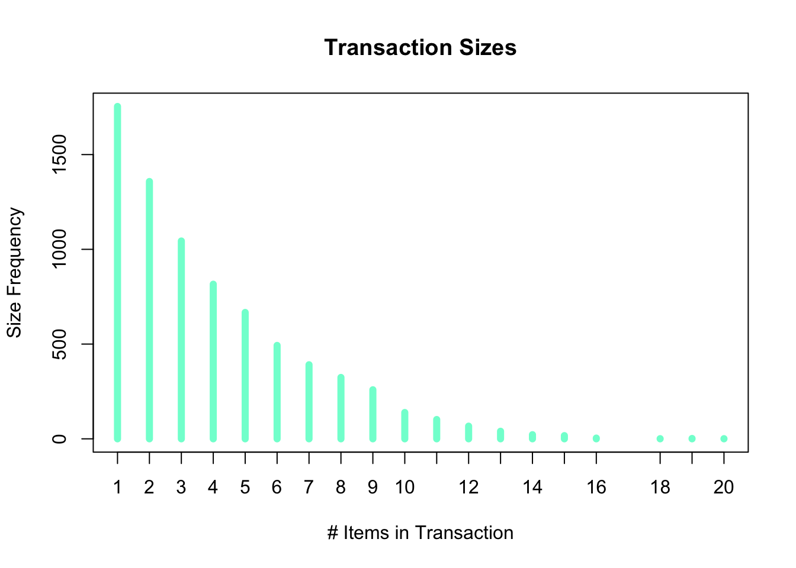

groceries = read.transactions("groceries.csv", sep = ",")Problem Set #8
Part 1
Question 1
Actionable -> Many patients go in for check-ups due to pain and are then typically prescribed medicine. As a result, the hospital could place their pharmacy on the first floor for easier access for patients who have to grab/pick-up their prescriptions, thus avoiding possible instances for more pain to arise.
Trivial -> Individuals that come to the hospital with broken bones typically get surgery in order to heal the bone properly. This is common and is dealt with by an orthopedic doctor.
Inexplicable -> A big inexplicable event that occurs is cancer. This disorder can develop and affect almost anyone is our society. There is also a variety of forms of cancer, thus making the complete knowledge on all cancer being incomplete. There is no official cure for cancer.
Question 2
I grew up in the community of artistic gymnastics. This involvement of mine with this sport began when I was six and now I am 20 and currently an assistant gymnastics coach at my previous high school. An application of association rule that might be useful in gymnastics would be if a gymnast practices the uneven bars then they would need to purchase and own a pair of grips and rolls of tape. Grips are common to use on uneven bars to help gymnast gain better grip on the bar whereas tape is used to help cover any rips of skin that may occur on their hands as they continue to practice.
Question 3
groceriestransactions in sparse format with
9835 transactions (rows) and
169 items (columns)summary(groceries)transactions as itemMatrix in sparse format with
9835 rows (elements/itemsets/transactions) and
169 columns (items) and a density of 0.02609146
most frequent items:
whole milk other vegetables rolls/buns soda
2513 1903 1809 1715
yogurt (Other)
1372 34055
element (itemset/transaction) length distribution:
sizes
1 2 3 4 5 6 7 8 9 10 11 12 13 14 15 16
2159 1643 1299 1005 855 645 545 438 350 246 182 117 78 77 55 46
17 18 19 20 21 22 23 24 26 27 28 29 32
29 14 14 9 11 4 6 1 1 1 1 3 1
Min. 1st Qu. Median Mean 3rd Qu. Max.
1.000 2.000 3.000 4.409 6.000 32.000
includes extended item information - examples:
labels
1 abrasive cleaner
2 artif. sweetener
3 baby cosmeticss = summary(groceries)sizes = s@lengths
print(sizes)sizes
1 2 3 4 5 6 7 8 9 10 11 12 13 14 15 16
2159 1643 1299 1005 855 645 545 438 350 246 182 117 78 77 55 46
17 18 19 20 21 22 23 24 26 27 28 29 32
29 14 14 9 11 4 6 1 1 1 1 3 1 groceries_frequency =
tibble(
Items = names(itemFrequency(groceries)),
Frequency = itemFrequency(groceries)
)- The 10 least frequently purchased items are…
- baby food
- sound storage medium
- preservation products
- bags
- kitchen utensil
- baby cosmetics
- frozen chicken
- toilet cleaner
- make up remover
- salad dressing
groceries_frequency %>%
arrange(Frequency) %>%
slice(1:10)# A tibble: 10 × 2
Items Frequency
<chr> <dbl>
1 baby food 0.000102
2 sound storage medium 0.000102
3 preservation products 0.000203
4 bags 0.000407
5 kitchen utensil 0.000407
6 baby cosmetics 0.000610
7 frozen chicken 0.000610
8 toilet cleaner 0.000712
9 make up remover 0.000813
10 salad dressing 0.000813- Changing the minimum rule length to 3 generates 16 rules. Changing it to 4 generates 0 rules.
groceryrules =
apriori(groceries,
parameter = list(
support = 0.015,
confidence = 0.25,
minlen = 3
) )Apriori
Parameter specification:
confidence minval smax arem aval originalSupport maxtime support minlen
0.25 0.1 1 none FALSE TRUE 5 0.015 3
maxlen target ext
10 rules TRUE
Algorithmic control:
filter tree heap memopt load sort verbose
0.1 TRUE TRUE FALSE TRUE 2 TRUE
Absolute minimum support count: 147
set item appearances ...[0 item(s)] done [0.00s].
set transactions ...[169 item(s), 9835 transaction(s)] done [0.01s].
sorting and recoding items ... [73 item(s)] done [0.00s].
creating transaction tree ... done [0.01s].
checking subsets of size 1 2 3 done [0.00s].
writing ... [16 rule(s)] done [0.00s].
creating S4 object ... done [0.00s].summary(groceryrules)set of 16 rules
rule length distribution (lhs + rhs):sizes
3
16
Min. 1st Qu. Median Mean 3rd Qu. Max.
3 3 3 3 3 3
summary of quality measures:
support confidence coverage lift
Min. :0.01515 Min. :0.2704 Min. :0.02928 Min. :1.510
1st Qu.:0.01556 1st Qu.:0.3067 1st Qu.:0.04230 1st Qu.:1.840
Median :0.01749 Median :0.4007 Median :0.04814 Median :2.016
Mean :0.01865 Mean :0.3905 Mean :0.04984 Mean :2.065
3rd Qu.:0.02227 3rd Qu.:0.4745 3rd Qu.:0.05618 3rd Qu.:2.212
Max. :0.02318 Max. :0.5174 Max. :0.07483 Max. :2.842
count
Min. :149.0
1st Qu.:153.0
Median :172.0
Mean :183.4
3rd Qu.:219.0
Max. :228.0
mining info:
data ntransactions support confidence
groceries 9835 0.015 0.25
call
apriori(data = groceries, parameter = list(support = 0.015, confidence = 0.25, minlen = 3))groceryrules %>%
sort(by = "confidence") %>%
inspect() lhs rhs support
[1] {tropical fruit, yogurt} => {whole milk} 0.01514997
[2] {other vegetables, yogurt} => {whole milk} 0.02226741
[3] {other vegetables, root vegetables} => {whole milk} 0.02318251
[4] {other vegetables, tropical fruit} => {whole milk} 0.01708185
[5] {root vegetables, whole milk} => {other vegetables} 0.02318251
[6] {rolls/buns, yogurt} => {whole milk} 0.01555669
[7] {other vegetables, rolls/buns} => {whole milk} 0.01789527
[8] {tropical fruit, whole milk} => {other vegetables} 0.01708185
[9] {whole milk, yogurt} => {other vegetables} 0.02226741
[10] {tropical fruit, whole milk} => {yogurt} 0.01514997
[11] {rolls/buns, whole milk} => {other vegetables} 0.01789527
[12] {other vegetables, whole milk} => {root vegetables} 0.02318251
[13] {other vegetables, whole milk} => {yogurt} 0.02226741
[14] {whole milk, yogurt} => {rolls/buns} 0.01555669
[15] {rolls/buns, whole milk} => {yogurt} 0.01555669
[16] {whole milk, yogurt} => {tropical fruit} 0.01514997
confidence coverage lift count
[1] 0.5173611 0.02928317 2.024770 149
[2] 0.5128806 0.04341637 2.007235 219
[3] 0.4892704 0.04738180 1.914833 228
[4] 0.4759207 0.03589222 1.862587 168
[5] 0.4740125 0.04890696 2.449770 228
[6] 0.4526627 0.03436706 1.771563 153
[7] 0.4200477 0.04260295 1.643919 176
[8] 0.4038462 0.04229792 2.087140 168
[9] 0.3974592 0.05602440 2.054131 219
[10] 0.3581731 0.04229792 2.567516 149
[11] 0.3159785 0.05663447 1.633026 176
[12] 0.3097826 0.07483477 2.842082 228
[13] 0.2975543 0.07483477 2.132979 219
[14] 0.2776770 0.05602440 1.509648 153
[15] 0.2746858 0.05663447 1.969049 153
[16] 0.2704174 0.05602440 2.577089 149 - Change the minimum rule length back to 2, produce a list of rules involving either soda or whipped/sour cream.
groceryrules2 =
apriori(groceries,
parameter = list(
support = 0.015,
confidence = 0.25,
minlen = 2
) )Apriori
Parameter specification:
confidence minval smax arem aval originalSupport maxtime support minlen
0.25 0.1 1 none FALSE TRUE 5 0.015 2
maxlen target ext
10 rules TRUE
Algorithmic control:
filter tree heap memopt load sort verbose
0.1 TRUE TRUE FALSE TRUE 2 TRUE
Absolute minimum support count: 147
set item appearances ...[0 item(s)] done [0.00s].
set transactions ...[169 item(s), 9835 transaction(s)] done [0.00s].
sorting and recoding items ... [73 item(s)] done [0.00s].
creating transaction tree ... done [0.01s].
checking subsets of size 1 2 3 done [0.00s].
writing ... [78 rule(s)] done [0.00s].
creating S4 object ... done [0.00s].groceryrules2 %>%
sort(by = "confidence") %>%
inspect() lhs rhs support
[1] {tropical fruit, yogurt} => {whole milk} 0.01514997
[2] {other vegetables, yogurt} => {whole milk} 0.02226741
[3] {butter} => {whole milk} 0.02755465
[4] {curd} => {whole milk} 0.02613116
[5] {other vegetables, root vegetables} => {whole milk} 0.02318251
[6] {other vegetables, tropical fruit} => {whole milk} 0.01708185
[7] {root vegetables, whole milk} => {other vegetables} 0.02318251
[8] {domestic eggs} => {whole milk} 0.02999492
[9] {rolls/buns, yogurt} => {whole milk} 0.01555669
[10] {whipped/sour cream} => {whole milk} 0.03223183
[11] {root vegetables} => {whole milk} 0.04890696
[12] {sugar} => {whole milk} 0.01504830
[13] {root vegetables} => {other vegetables} 0.04738180
[14] {frozen vegetables} => {whole milk} 0.02043721
[15] {other vegetables, rolls/buns} => {whole milk} 0.01789527
[16] {chicken} => {other vegetables} 0.01789527
[17] {cream cheese} => {whole milk} 0.01647178
[18] {margarine} => {whole milk} 0.02419929
[19] {chicken} => {whole milk} 0.01759024
[20] {white bread} => {whole milk} 0.01708185
[21] {beef} => {whole milk} 0.02125064
[22] {tropical fruit, whole milk} => {other vegetables} 0.01708185
[23] {tropical fruit} => {whole milk} 0.04229792
[24] {whipped/sour cream} => {other vegetables} 0.02887646
[25] {yogurt} => {whole milk} 0.05602440
[26] {pip fruit} => {whole milk} 0.03009659
[27] {whole milk, yogurt} => {other vegetables} 0.02226741
[28] {brown bread} => {whole milk} 0.02521607
[29] {other vegetables} => {whole milk} 0.07483477
[30] {pork} => {whole milk} 0.02216573
[31] {napkins} => {whole milk} 0.01972547
[32] {beef} => {other vegetables} 0.01972547
[33] {pork} => {other vegetables} 0.02165735
[34] {pastry} => {whole milk} 0.03324860
[35] {frozen vegetables} => {other vegetables} 0.01779359
[36] {citrus fruit} => {whole milk} 0.03050330
[37] {fruit/vegetable juice} => {whole milk} 0.02663955
[38] {butter} => {other vegetables} 0.02003050
[39] {tropical fruit, whole milk} => {yogurt} 0.01514997
[40] {domestic eggs} => {other vegetables} 0.02226741
[41] {citrus fruit} => {other vegetables} 0.02887646
[42] {frankfurter} => {whole milk} 0.02053889
[43] {pip fruit} => {other vegetables} 0.02613116
[44] {newspapers} => {whole milk} 0.02735130
[45] {tropical fruit} => {other vegetables} 0.03589222
[46] {margarine} => {other vegetables} 0.01972547
[47] {chocolate} => {whole milk} 0.01667514
[48] {beef} => {root vegetables} 0.01738688
[49] {frankfurter} => {rolls/buns} 0.01921708
[50] {sausage} => {rolls/buns} 0.03060498
[51] {curd} => {yogurt} 0.01728521
[52] {curd} => {other vegetables} 0.01718353
[53] {coffee} => {whole milk} 0.01870869
[54] {sausage} => {whole milk} 0.02989324
[55] {rolls/buns, whole milk} => {other vegetables} 0.01789527
[56] {yogurt} => {other vegetables} 0.04341637
[57] {bottled water} => {whole milk} 0.03436706
[58] {other vegetables, whole milk} => {root vegetables} 0.02318251
[59] {rolls/buns} => {whole milk} 0.05663447
[60] {other vegetables, whole milk} => {yogurt} 0.02226741
[61] {whole milk} => {other vegetables} 0.07483477
[62] {fruit/vegetable juice} => {other vegetables} 0.02104728
[63] {whipped/sour cream} => {yogurt} 0.02074225
[64] {brown bread} => {other vegetables} 0.01870869
[65] {sausage} => {other vegetables} 0.02694459
[66] {frankfurter} => {other vegetables} 0.01647178
[67] {tropical fruit} => {yogurt} 0.02928317
[68] {whole milk, yogurt} => {rolls/buns} 0.01555669
[69] {rolls/buns, whole milk} => {yogurt} 0.01555669
[70] {whole milk, yogurt} => {tropical fruit} 0.01514997
[71] {pip fruit} => {tropical fruit} 0.02043721
[72] {bottled water} => {soda} 0.02897814
[73] {citrus fruit} => {yogurt} 0.02165735
[74] {fruit/vegetable juice} => {yogurt} 0.01870869
[75] {sausage} => {soda} 0.02430097
[76] {fruit/vegetable juice} => {soda} 0.01840366
[77] {bottled beer} => {whole milk} 0.02043721
[78] {pastry} => {other vegetables} 0.02257245
confidence coverage lift count
[1] 0.5173611 0.02928317 2.0247698 149
[2] 0.5128806 0.04341637 2.0072345 219
[3] 0.4972477 0.05541434 1.9460530 271
[4] 0.4904580 0.05327911 1.9194805 257
[5] 0.4892704 0.04738180 1.9148326 228
[6] 0.4759207 0.03589222 1.8625865 168
[7] 0.4740125 0.04890696 2.4497702 228
[8] 0.4727564 0.06344687 1.8502027 295
[9] 0.4526627 0.03436706 1.7715630 153
[10] 0.4496454 0.07168277 1.7597542 317
[11] 0.4486940 0.10899847 1.7560310 481
[12] 0.4444444 0.03385867 1.7393996 148
[13] 0.4347015 0.10899847 2.2466049 466
[14] 0.4249471 0.04809354 1.6630940 201
[15] 0.4200477 0.04260295 1.6439194 176
[16] 0.4170616 0.04290798 2.1554393 176
[17] 0.4153846 0.03965430 1.6256696 162
[18] 0.4131944 0.05856634 1.6170980 238
[19] 0.4099526 0.04290798 1.6044106 173
[20] 0.4057971 0.04209456 1.5881474 168
[21] 0.4050388 0.05246568 1.5851795 209
[22] 0.4038462 0.04229792 2.0871397 168
[23] 0.4031008 0.10493137 1.5775950 416
[24] 0.4028369 0.07168277 2.0819237 284
[25] 0.4016035 0.13950178 1.5717351 551
[26] 0.3978495 0.07564820 1.5570432 296
[27] 0.3974592 0.05602440 2.0541308 219
[28] 0.3887147 0.06487036 1.5212930 248
[29] 0.3867578 0.19349263 1.5136341 736
[30] 0.3844797 0.05765125 1.5047187 218
[31] 0.3766990 0.05236401 1.4742678 194
[32] 0.3759690 0.05246568 1.9430662 194
[33] 0.3756614 0.05765125 1.9414764 213
[34] 0.3737143 0.08896797 1.4625865 327
[35] 0.3699789 0.04809354 1.9121083 175
[36] 0.3685504 0.08276563 1.4423768 300
[37] 0.3684951 0.07229283 1.4421604 262
[38] 0.3614679 0.05541434 1.8681223 197
[39] 0.3581731 0.04229792 2.5675162 149
[40] 0.3509615 0.06344687 1.8138238 219
[41] 0.3488943 0.08276563 1.8031403 284
[42] 0.3482759 0.05897306 1.3630295 202
[43] 0.3454301 0.07564820 1.7852365 257
[44] 0.3426752 0.07981698 1.3411103 269
[45] 0.3420543 0.10493137 1.7677896 353
[46] 0.3368056 0.05856634 1.7406635 194
[47] 0.3360656 0.04961871 1.3152427 164
[48] 0.3313953 0.05246568 3.0403668 171
[49] 0.3258621 0.05897306 1.7716161 189
[50] 0.3257576 0.09395018 1.7710480 301
[51] 0.3244275 0.05327911 2.3256154 170
[52] 0.3225191 0.05327911 1.6668288 169
[53] 0.3222417 0.05805796 1.2611408 184
[54] 0.3181818 0.09395018 1.2452520 294
[55] 0.3159785 0.05663447 1.6330258 176
[56] 0.3112245 0.13950178 1.6084566 427
[57] 0.3109476 0.11052364 1.2169396 338
[58] 0.3097826 0.07483477 2.8420820 228
[59] 0.3079049 0.18393493 1.2050318 557
[60] 0.2975543 0.07483477 2.1329789 219
[61] 0.2928770 0.25551601 1.5136341 736
[62] 0.2911392 0.07229283 1.5046529 207
[63] 0.2893617 0.07168277 2.0742510 204
[64] 0.2884013 0.06487036 1.4905025 184
[65] 0.2867965 0.09395018 1.4822091 265
[66] 0.2793103 0.05897306 1.4435193 162
[67] 0.2790698 0.10493137 2.0004746 288
[68] 0.2776770 0.05602440 1.5096478 153
[69] 0.2746858 0.05663447 1.9690488 153
[70] 0.2704174 0.05602440 2.5770885 149
[71] 0.2701613 0.07564820 2.5746476 201
[72] 0.2621895 0.11052364 1.5035766 285
[73] 0.2616708 0.08276563 1.8757521 213
[74] 0.2587904 0.07229283 1.8551049 184
[75] 0.2586580 0.09395018 1.4833245 239
[76] 0.2545710 0.07229283 1.4598869 181
[77] 0.2537879 0.08052872 0.9932367 201
[78] 0.2537143 0.08896797 1.3112349 222 groceryrules2 %>%
subset(items %in% c("soda", "whipped/sour cream")) %>%
inspect() lhs rhs support confidence
[1] {fruit/vegetable juice} => {soda} 0.01840366 0.2545710
[2] {whipped/sour cream} => {yogurt} 0.02074225 0.2893617
[3] {whipped/sour cream} => {other vegetables} 0.02887646 0.4028369
[4] {whipped/sour cream} => {whole milk} 0.03223183 0.4496454
[5] {sausage} => {soda} 0.02430097 0.2586580
[6] {bottled water} => {soda} 0.02897814 0.2621895
coverage lift count
[1] 0.07229283 1.459887 181
[2] 0.07168277 2.074251 204
[3] 0.07168277 2.081924 284
[4] 0.07168277 1.759754 317
[5] 0.09395018 1.483324 239
[6] 0.11052364 1.503577 285 Part 2
1.
df = read.transactions('Market_Basket_Optimisation.csv', sep = ",")Warning in asMethod(object): removing duplicated items in transactions2.
There are a total of 7501 transactions in the data. There are 119 distinct items in the data.
dftransactions in sparse format with
7501 transactions (rows) and
119 items (columns)3.
s = summary(df)sizes = s@lengths
print(sizes)sizes
1 2 3 4 5 6 7 8 9 10 11 12 13 14 15 16
1754 1358 1044 816 667 493 391 324 259 139 102 67 40 22 17 4
18 19 20
1 2 1 plot(sizes,
lw = 6, col = "aquamarine",
main="Transaction Sizes",
xlab="# Items in Transaction",
ylab="Size Frequency")
4.
library(tidyverse)
df_frequency =
tibble(
Items = names(itemFrequency(df)),
Frequency = itemFrequency(df)
)The 10 most frequent items are…
- mineral water
- eggs
- spaghetti
- french fries
- chocolate
- green tea
- milk
- ground beef
- frozen vegetables
- pancakes
df_frequency %>%
arrange(desc(Frequency)) %>%
slice(1:10)# A tibble: 10 × 2
Items Frequency
<chr> <dbl>
1 mineral water 0.238
2 eggs 0.180
3 spaghetti 0.174
4 french fries 0.171
5 chocolate 0.164
6 green tea 0.132
7 milk 0.130
8 ground beef 0.0983
9 frozen vegetables 0.0953
10 pancakes 0.0951The 10 least frequent items are…
- water spray
- napkins
- cream
- bramble
- tea
- chutney
- mashed potato
- chocolate bread
- dessert wine
- ketchup
df_frequency %>%
arrange(Frequency) %>%
slice(1:10)# A tibble: 10 × 2
Items Frequency
<chr> <dbl>
1 water spray 0.000400
2 napkins 0.000667
3 cream 0.000933
4 bramble 0.00187
5 tea 0.00387
6 chutney 0.00413
7 mashed potato 0.00413
8 chocolate bread 0.00427
9 dessert wine 0.00440
10 ketchup 0.00440 5.
There is a total of 52 association rules that were generated.
df.rules =
apriori(df,
parameter = list(
support = 0.015,
confidence = 0.25,
minlen = 2
) )Apriori
Parameter specification:
confidence minval smax arem aval originalSupport maxtime support minlen
0.25 0.1 1 none FALSE TRUE 5 0.015 2
maxlen target ext
10 rules TRUE
Algorithmic control:
filter tree heap memopt load sort verbose
0.1 TRUE TRUE FALSE TRUE 2 TRUE
Absolute minimum support count: 112
set item appearances ...[0 item(s)] done [0.00s].
set transactions ...[119 item(s), 7501 transaction(s)] done [0.00s].
sorting and recoding items ... [62 item(s)] done [0.00s].
creating transaction tree ... done [0.00s].
checking subsets of size 1 2 3 done [0.00s].
writing ... [52 rule(s)] done [0.00s].
creating S4 object ... done [0.00s].6.
There are 43 rules with a length of 2 items & 9 rules with a length of 3 items, resulting in our total of 52 rules.
summary(df.rules)set of 52 rules
rule length distribution (lhs + rhs):sizes
2 3
43 9
Min. 1st Qu. Median Mean 3rd Qu. Max.
2.000 2.000 2.000 2.173 2.000 3.000
summary of quality measures:
support confidence coverage lift
Min. :0.01506 Min. :0.2506 Min. :0.03546 Min. :1.174
1st Qu.:0.01693 1st Qu.:0.2909 1st Qu.:0.05106 1st Qu.:1.446
Median :0.02020 Median :0.3224 Median :0.06292 Median :1.650
Mean :0.02467 Mean :0.3310 Mean :0.07636 Mean :1.707
3rd Qu.:0.02750 3rd Qu.:0.3601 3rd Qu.:0.08719 3rd Qu.:1.829
Max. :0.05973 Max. :0.4565 Max. :0.23837 Max. :3.292
count
Min. :113.0
1st Qu.:127.0
Median :151.5
Mean :185.0
3rd Qu.:206.2
Max. :448.0
mining info:
data ntransactions support confidence
df 7501 0.015 0.25
call
apriori(data = df, parameter = list(support = 0.015, confidence = 0.25, minlen = 2))Here are the top 12 association rules by confidence.
df.rules %>%
sort(by = "confidence") %>%
head(n = 12) %>%
inspect() lhs rhs support confidence
[1] {soup} => {mineral water} 0.02306359 0.4564644
[2] {milk, spaghetti} => {mineral water} 0.01573124 0.4436090
[3] {ground beef, spaghetti} => {mineral water} 0.01706439 0.4353741
[4] {olive oil} => {mineral water} 0.02759632 0.4190283
[5] {ground beef, mineral water} => {spaghetti} 0.01706439 0.4169381
[6] {ground beef} => {mineral water} 0.04092788 0.4165536
[7] {chocolate, spaghetti} => {mineral water} 0.01586455 0.4047619
[8] {salmon} => {mineral water} 0.01706439 0.4012539
[9] {ground beef} => {spaghetti} 0.03919477 0.3989145
[10] {cooking oil} => {mineral water} 0.02013065 0.3942559
[11] {chicken} => {mineral water} 0.02279696 0.3800000
[12] {frozen vegetables} => {mineral water} 0.03572857 0.3748252
coverage lift count
[1] 0.05052660 1.914955 173
[2] 0.03546194 1.861024 118
[3] 0.03919477 1.826477 128
[4] 0.06585789 1.757904 207
[5] 0.04092788 2.394681 128
[6] 0.09825357 1.747522 307
[7] 0.03919477 1.698053 119
[8] 0.04252766 1.683336 128
[9] 0.09825357 2.291162 294
[10] 0.05105986 1.653978 151
[11] 0.05999200 1.594172 171
[12] 0.09532062 1.572463 268 Here are the top 12 association rules by lift.
df.rules %>%
sort(by = "lift") %>%
head(n = 12) %>%
inspect() lhs rhs support confidence
[1] {herb & pepper} => {ground beef} 0.01599787 0.3234501
[2] {mineral water, spaghetti} => {ground beef} 0.01706439 0.2857143
[3] {ground beef, mineral water} => {spaghetti} 0.01706439 0.4169381
[4] {soup} => {milk} 0.01519797 0.3007916
[5] {ground beef} => {spaghetti} 0.03919477 0.3989145
[6] {mineral water, spaghetti} => {milk} 0.01573124 0.2633929
[7] {olive oil} => {spaghetti} 0.02293028 0.3481781
[8] {olive oil} => {milk} 0.01706439 0.2591093
[9] {soup} => {mineral water} 0.02306359 0.4564644
[10] {herb & pepper} => {spaghetti} 0.01626450 0.3288410
[11] {milk, mineral water} => {spaghetti} 0.01573124 0.3277778
[12] {milk, spaghetti} => {mineral water} 0.01573124 0.4436090
coverage lift count
[1] 0.04946007 3.291994 120
[2] 0.05972537 2.907928 128
[3] 0.04092788 2.394681 128
[4] 0.05052660 2.321232 114
[5] 0.09825357 2.291162 294
[6] 0.05972537 2.032623 118
[7] 0.06585789 1.999758 172
[8] 0.06585789 1.999567 128
[9] 0.05052660 1.914955 173
[10] 0.04946007 1.888695 122
[11] 0.04799360 1.882589 118
[12] 0.03546194 1.861024 118 7.
Here are the top 10 association rules by lift, that do not include the 6 most frequent items. We can see that there are only 3 available.
df.rules %>%
subset(!items %in% c("mineral water", "eggs", "spaghetti", "french fries", "chocolate", "green tea")) %>%
sort(by = "lift") %>%
inspect() lhs rhs support confidence coverage lift
[1] {herb & pepper} => {ground beef} 0.01599787 0.3234501 0.04946007 3.291994
[2] {soup} => {milk} 0.01519797 0.3007916 0.05052660 2.321232
[3] {olive oil} => {milk} 0.01706439 0.2591093 0.06585789 1.999567
count
[1] 120
[2] 114
[3] 128 8.
A couple of rules I found the most interesting were the purchases of shrimp and chocolate, burgers and eggs, and pancakes and spaghetti. All of these combinations are quite uncommon to me for each pair has another purchased item from such a different food group (such as sweet and savory & breakfast and dinner). When it comes to retail context, I think that these items being purchased together were due to the commonness that each item has. Possibly putting common items such as all of these mentioned closer together could possibly result in more convenient grocery store run for customers. If buying shrimp for dinner, purchasing chocolate for dessert is a pretty common thought process. When buying burgers, purchasing eggs to eat the next morning for breakfast could easily be a reason for purchase. Lastly, when buying pancake mix for breakfast, buying spaghetti for dinner later i the day would save additional shopping and prepping later in time. All of these possibly scenarios were just a. few of the possible ones that could occur when relating them back to the retail context.
df.rules %>%
inspect() lhs rhs support confidence
[1] {salmon} => {mineral water} 0.01706439 0.4012539
[2] {honey} => {mineral water} 0.01506466 0.3174157
[3] {herb & pepper} => {ground beef} 0.01599787 0.3234501
[4] {herb & pepper} => {spaghetti} 0.01626450 0.3288410
[5] {herb & pepper} => {mineral water} 0.01706439 0.3450135
[6] {grated cheese} => {spaghetti} 0.01653113 0.3155216
[7] {grated cheese} => {mineral water} 0.01746434 0.3333333
[8] {soup} => {milk} 0.01519797 0.3007916
[9] {soup} => {mineral water} 0.02306359 0.4564644
[10] {cooking oil} => {spaghetti} 0.01586455 0.3107050
[11] {cooking oil} => {mineral water} 0.02013065 0.3942559
[12] {whole wheat rice} => {mineral water} 0.02013065 0.3439636
[13] {turkey} => {eggs} 0.01946407 0.3113006
[14] {turkey} => {spaghetti} 0.01653113 0.2643923
[15] {turkey} => {mineral water} 0.01919744 0.3070362
[16] {chicken} => {spaghetti} 0.01719771 0.2866667
[17] {chicken} => {mineral water} 0.02279696 0.3800000
[18] {frozen smoothie} => {mineral water} 0.02026396 0.3200000
[19] {low fat yogurt} => {mineral water} 0.02399680 0.3135889
[20] {tomatoes} => {spaghetti} 0.02093054 0.3060429
[21] {tomatoes} => {mineral water} 0.02439675 0.3567251
[22] {olive oil} => {milk} 0.01706439 0.2591093
[23] {olive oil} => {spaghetti} 0.02293028 0.3481781
[24] {olive oil} => {mineral water} 0.02759632 0.4190283
[25] {shrimp} => {chocolate} 0.01799760 0.2518657
[26] {shrimp} => {spaghetti} 0.02119717 0.2966418
[27] {shrimp} => {mineral water} 0.02359685 0.3302239
[28] {cake} => {mineral water} 0.02746300 0.3388158
[29] {burgers} => {french fries} 0.02199707 0.2522936
[30] {burgers} => {eggs} 0.02879616 0.3302752
[31] {burgers} => {mineral water} 0.02439675 0.2798165
[32] {pancakes} => {spaghetti} 0.02519664 0.2650771
[33] {pancakes} => {mineral water} 0.03372884 0.3548387
[34] {frozen vegetables} => {spaghetti} 0.02786295 0.2923077
[35] {frozen vegetables} => {mineral water} 0.03572857 0.3748252
[36] {ground beef} => {spaghetti} 0.03919477 0.3989145
[37] {ground beef} => {mineral water} 0.04092788 0.4165536
[38] {milk} => {spaghetti} 0.03546194 0.2736626
[39] {milk} => {mineral water} 0.04799360 0.3703704
[40] {chocolate} => {mineral water} 0.05265965 0.3213995
[41] {eggs} => {mineral water} 0.05092654 0.2833828
[42] {spaghetti} => {mineral water} 0.05972537 0.3430322
[43] {mineral water} => {spaghetti} 0.05972537 0.2505593
[44] {ground beef, spaghetti} => {mineral water} 0.01706439 0.4353741
[45] {ground beef, mineral water} => {spaghetti} 0.01706439 0.4169381
[46] {mineral water, spaghetti} => {ground beef} 0.01706439 0.2857143
[47] {milk, spaghetti} => {mineral water} 0.01573124 0.4436090
[48] {milk, mineral water} => {spaghetti} 0.01573124 0.3277778
[49] {mineral water, spaghetti} => {milk} 0.01573124 0.2633929
[50] {chocolate, spaghetti} => {mineral water} 0.01586455 0.4047619
[51] {chocolate, mineral water} => {spaghetti} 0.01586455 0.3012658
[52] {mineral water, spaghetti} => {chocolate} 0.01586455 0.2656250
coverage lift count
[1] 0.04252766 1.683336 128
[2] 0.04746034 1.331619 113
[3] 0.04946007 3.291994 120
[4] 0.04946007 1.888695 122
[5] 0.04946007 1.447397 128
[6] 0.05239301 1.812196 124
[7] 0.05239301 1.398397 131
[8] 0.05052660 2.321232 114
[9] 0.05052660 1.914955 173
[10] 0.05105986 1.784531 119
[11] 0.05105986 1.653978 151
[12] 0.05852553 1.442993 151
[13] 0.06252500 1.732245 146
[14] 0.06252500 1.518535 124
[15] 0.06252500 1.288075 144
[16] 0.05999200 1.646468 129
[17] 0.05999200 1.594172 171
[18] 0.06332489 1.342461 152
[19] 0.07652313 1.315565 180
[20] 0.06839088 1.757755 157
[21] 0.06839088 1.496530 183
[22] 0.06585789 1.999567 128
[23] 0.06585789 1.999758 172
[24] 0.06585789 1.757904 207
[25] 0.07145714 1.537221 135
[26] 0.07145714 1.703760 159
[27] 0.07145714 1.385352 177
[28] 0.08105586 1.421397 206
[29] 0.08718837 1.476173 165
[30] 0.08718837 1.837830 216
[31] 0.08718837 1.173883 183
[32] 0.09505399 1.522468 189
[33] 0.09505399 1.488616 253
[34] 0.09532062 1.678867 209
[35] 0.09532062 1.572463 268
[36] 0.09825357 2.291162 294
[37] 0.09825357 1.747522 307
[38] 0.12958272 1.571779 266
[39] 0.12958272 1.553774 360
[40] 0.16384482 1.348332 395
[41] 0.17970937 1.188845 382
[42] 0.17411012 1.439085 448
[43] 0.23836822 1.439085 448
[44] 0.03919477 1.826477 128
[45] 0.04092788 2.394681 128
[46] 0.05972537 2.907928 128
[47] 0.03546194 1.861024 118
[48] 0.04799360 1.882589 118
[49] 0.05972537 2.032623 118
[50] 0.03919477 1.698053 119
[51] 0.05265965 1.730318 119
[52] 0.05972537 1.621199 119